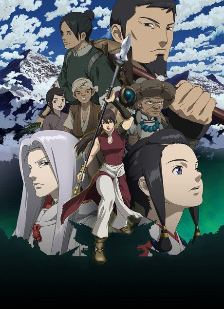

Michiko & Hatchin
ミチコとハッチン
Michiko, a fugitive who just broke out of prison, rescues an abused girl named Hatchin, and the two go on the run across a South American country.
An original anime, so there's no book to continue with.
7.6AniList score
—Animeter, no votes yet
22episodes
Rate it or report where you stopped
Is it worth pushing through?
Built from what visitors report across all 22 episodes.
Loading reports…Checking what other people said about this one.
Sign in above with your email to add your report.
More like Michiko & Hatchin
 Manga Ch. 487.9
Manga Ch. 487.9
 Manga Ch. 287.2
Manga Ch. 287.2

Original7.9 Done8.4
Done8.4
 Done7.5
Done7.5
 Original7.5
Original7.5
 Manga Ch. 1018.7
Manga Ch. 1018.7
 Original8.6
Original8.6
 Unclear7.7
Unclear7.7
 Original8.1
Original8.1
 VN6.7
VN6.7
 Unclear6.9
Unclear6.9